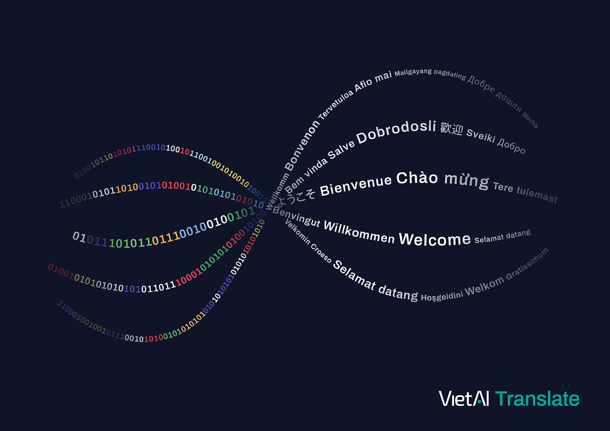

Better translation for Vietnamese
Collect high quality data and train a state-of-the-art Neural Machine Translation model for Vietnamese.
A model trained with our dataset
outperforms Google Translate on a selected set of diverse text sources,
including a standard benchmark used in Machine Translation research
Of course this is not true for all test cases across all domains,
we are continuously improving both data and model to counter detected failure cases.
.
The following chart shows the two systems' overall
performance on our test set in BLEU score -
a standard auto-metric in Machine Translation.
Below, we highlighted a few translations produced by our model ,
contrasting them against the outputs from Google Translate
Google Translate outputs are subjected to change on a daily basis.
The outputs reported here are recorded on April 9th, 2021.
.
Input:
Edward chose his words carefully. "It is a great honor, honey, and I'm sure it's not one they would offer lightly. They must have had good reason for choosing you." He hesitated. "We have to think about this very carefully. About what it would do to our lives."
Google Translate:
Edward lựa chọn lời nói của mình một cách cẩn thận. "Đó là một vinh dự lớn, em yêu, và anh chắc chắn đó không phải là một vinh dự mà họ sẽ đưa ra một cách nhẹ nhàng. Họ phải có lý do chính đáng để chọn bạn." Anh ngập ngừng. "Chúng tôi phải suy nghĩ về điều này rất cẩn thận. Về những gì nó sẽ làm cho cuộc sống của chúng tôi."
Our model:
Edward cẩn thận lựa chọn từ ngữ của mình. "Đó là một vinh dự lớn lao, con yêu, và bố chắc chắn rằng đó không phải là thứ mà họ sẽ đề nghị một cách nhẹ nhàng. Họ hẳn phải có lý do chính đáng để chọn con." Anh ngập ngừng. "Chúng ta phải suy nghĩ thật cẩn thận về điều này. Về những gì nó sẽ làm với cuộc sống của chúng ta."
------------
Input:
2. To consider and approve business co - operation, joint venture and build - operate - transfer contracts, to permit foreign organizations and individuals to establish enterprises with one hundred (100) per cent foreign owned capital and to approve the charters of enterprises with foreign owned capital.
Google Translate:
2. Xem xét, chấp thuận các hợp đồng hợp tác kinh doanh, liên doanh, xây dựng - kinh doanh - chuyển giao, cho phép tổ chức, cá nhân nước ngoài thành lập doanh nghiệp 100% vốn nước ngoài và chấp thuận Điều lệ doanh nghiệp có vốn đầu tư nước ngoài. vốn sở hữu.
Our model:
2. Xem xét, phê duyệt hợp đồng hợp tác kinh doanh, liên doanh, liên kết, hợp đồng xây dựng - kinh doanh - chuyển giao, cho phép tổ chức, cá nhân nước ngoài thành lập doanh nghiệp 100% vốn nước ngoài và phê duyệt điều lệ của doanh nghiệp có vốn đầu tư nước ngoài.
------------
Input:
You can't go on conducting your own investigations, Frank.
Google Translate:
Anh không thể tiến hành cuộc điều tra của riêng mình, Frank.
Our model:
Anh không thể tự mình điều tra được đâu, Frank.
------------
Input:
So that's what's behind Beth's crazy diet !
Google Translate:
Vì vậy, đó là những gì đằng sau chế độ ăn kiêng điên cuồng của Beth !
Our model:
Vậy đó là cái đằng sau chế độ ăn uống điên rồ của Beth !
Input:
Điều duy nhất thật sự làm em phiền là em có cảm giác rằng em và con có lẽ sẽ chẳng còn bao giờ trở về đây nữa. Em có cảm giác hình như em bỏ trốn anh. Nhưng anh sẽ cùng em trên mọi bước đường em đi. Bây giờ em cần đến anh hơn bao giờ hết.
Google Translate:
The only thing that really bothers me is that I have the feeling that I and I probably will never be back here again. I feel like I'm running away from you. But I will be with you every step of the way. Now I need you more than ever.
Our model:
The only thing that really bothers me is that I have a feeling that I and my child might never come back here again. I feel like I'm running away from you. But you'll be with me on every step I take. I need you now more than ever.
------------
Input:
Nhưng thật nản lòng là với bệnh Parkinson và các chứng rối loạn vận động khác, chúng không có dấu ấn sinh học, vì vậy không có phương pháp xét nghiệm máu đơn giản nào mà bạn có thể làm, và cái tốt nhất mà chúng ta có là bài kiểm tra thần kinh này.
Google Translate:
But frustratingly is that with Parkinson's disease and other motor disorders, they don't have biomarkers, so there's no simple blood test you can do, and the best of us. There is this nerve test.
Our model:
But what's discouraged is that with Parkinson's disease and other motor disorders, they have no biomarkers, so there's no simple blood test that you can do, and the best thing we have is this neurological test.
------------
Input:
Trung bình mỗi nhánh xuống cho 8,9 + - 0,2 nhánh cơ và trung bình có 3,1 + - 0,3 nhánh xuyên trên 01 tiêu bản đùi. Số nhánh nuôi cơ rộng ngoài là nhiều nhất 7,9 + - 0,4 nhánh.
Google Translate:
On average, each branch down for 8,9 + - 0,2 muscle arms and on average has 3,1 + - 0,3 arms across 01 thigh template. The number of branches for external muscle is at most 7,9 + - 0,4 branches.
Our model:
On average, each branch downwards to 8.9 + - 0.2 muscle branches and on average there are 3.1 + - 0.3 penetrating branches per thigh specimen. The number of extended muscle rearing branches is at most 7.9 + - 0.4.
------------
Input:
2.2.1. Tác giả không đồng thời là chủ sở hữu tác phẩm kiến trúc có các quyền nhân thân không được chuyển giao cho người khác, bao gồm:
Google Translate:
2.2.1. An author who is not concurrently the owner of an architectural work has moral rights not transferred to others, including:
Our model:
2.2.1. Authors who are not concurrently owners of architectural works and have personal rights not to be transferred to other persons, including:
Introduction
In this work, we aim to solve two problems at the heart of
Vietnamese Translation: first limited training data,
and second - generic translation output due to a lack in user interface with the model.
We solved them by simply collecting more data, and training our model
while conditioning its output on specific language styles.
We released the resulting models, code, and training data here:
Get the code at repository
Download data from Storage
Collecting more data
We collect data from open sources on the Internet,
and classify them into different categories, each labeled with a
specific language style
See all categories and their respective data sizes at https://github.com/vietai/SAT
. In total, there are 3.3 million
pairs of English and Vietnamese texts, ranging from single sentences to paragraphs.
Inspect a sample of our test data here:
In South Asia, in countries like India and Pakistan, four species of vultures are listed as critically endangered, which means they have less than 10 or 15 years to go extinct, and the reason is because they are falling prey by consuming livestock that has been treated with a painkilling drug like Diclofenac .
This drug has now been banned for veterinary use in India, and they have taken a stand .
Because there are no vultures, there's been a spread in the numbers of feral dogs at carcass dump sites, and when you have feral dogs, you have a huge time bomb of rabies. The number of cases of rabies has increased tremendously in India .
Kenya is going to have one of the largest wind farms in Africa: 353 wind turbines are going to be up at Lake Turkana .
I am not against wind energy, but we need to work with the governments, because wind turbines do this to birds. They slice them in half .
Tại Nam Á, những nước như Ấn Độ và Pakistan, 4 loài kền kền được ghi danh trong danh sách những loài có nguy cơ cực cao điều này có nghĩa là chúng chỉ còn ít hơn 10 hoặc 15 năm để chạm đến mức tuyệt chủng và lí do đó là bởi vì chúng bị biến thành con mồi vì ăn phải gia súc đã được chữa trị bằng thuốc giảm đau như Diclofenac .
Thuốc này đã bị cấm sử dụng trong ngành thú y tại Ấn Độ. Chúng đã minh chứng rằng
Vì không có kền kền nên mới có sự tràn lan về số lượng chó hoang tại những khu vực chứa rác thải, xác động vật. Khi bạn có chó hoang, bạn có một quả bom hẹn giờ khổng lồ về bệnh dại. Số ca mắc bệnh dại đã tăng rất nhiều tại Ấn Độ .
Kenya sẽ có một cánh đồng quạt gió lớn nhất tại Châu Phi với 353 động cơ sẽ được lắp tại Lake Turkana
Tôi không phản đối năng lượng gió, nhưng chúng ta cần hợp tác với chính phủ, vì động cơ gió khiến những con chim thành thế này. Chúng bị cắt làm đôi .
Doyle's about halfway through our initial background check.
No. We don't insinuate connections we can't back up.
You should be nearby if President Qian wants to get on the phone.
Now this is different than the standoff over the Senkaku Islands.
Well, I'm asking for a small portion of the Seventh Fleet.
Are you supposed to take the Lord's name in vain like that ?
The President can issue an executive order in times of emergency.
There is a heat wave. That always pushes the grid to its limits.
And good luck with that first pitch tonight, Mr. Vice President.
This is about the Secretary of State nomination, isn't it ?
Doyle đang tiến hành kiểm tra lý lịch rồi.
Chúng ta sẽ không ám chỉ các mối liên hệ mà ta không thể chứng minh được.
Anh nên ở đây nếu chủ tịch Qian muốn trao đổi qua điện thoại.
Việc này khác với thế tranh chấp ở quần đảo Senkaku.
Chúng tôi chỉ yêu cầu một bộ phận nhỏ của Hạm đội 7.
Cô định xăm tên chúa lên tay thế này à ?
Tổng thống có thể ban hành sắc lệnh trong trường hợp khẩn cấp.
Nhiệt độ quá cao, hệ thống chịu đựng quá giới hạn rồi.
Và chúc may mắn với cú ném tối nay, ngài phó tổng thống.
Liên quan đến việc đề cử chức bộ trưởng Bộ ngoại giao, phải không ?
On the 20th of October 1994, the Government signed Decree No.177-CP promulgating the Statute on the Management of Investment and Construction (Statute on the Management of Investment and Construction 177-CP for short) as a substitute for the Statute on Capital Construction issued together with Decree No.385-HDBT on the 7th of November 1990 (Statute on Capital Construction 385-HDBT for short), and the Statute on the Drawing Up, Examination and Approval of the Designs of Construction Projects issued together with Decree No.237-HDBT on the 19th of September 1985 of the Council of Ministers.
In execution of Article 3 of the Decree, and Article 59 of the Statute on the Management of Investment and Construction 177-CP, the Ministry of Construction, the State Planning Committee and the Ministry of Finance hereunder guide the implementation of some main issues (outside the guidance on separate issues for the concerned ministries):
+ With regard to the investment projects under State ownership, besides the management of the same aspects as in the investment projects of the non- State economic sector, the State shall also manage the commercial and financial aspects, and the economic efficiency of the project.
The State-owned investment projects comprise all the projects of which the investor (or his representative) is appointed by the competent authorities of the State, to manage the whole or part of the investment capital of the project raised from whatever source.
+ The following investment projects shall come under separate guidance of the Ministries in charge of the branches after reaching agreement with the Ministry of Construction, the State Planning Committee and the Ministry of Finance:
Ngày 20/10/1994 Chính phủ đã ký Nghị định số 177/CP ban hành Điều lệ Quản lý đầu tư và xây dựng (gọi tắt là "điều lệ quản lý đầu tư và xây dựng 177/CP") thay thế Điều lệ quản lý xây dựng cơ bản ban hành kèm theo Nghị định số 385/HĐBT (gọi tắt là "Điều lệ quản lý XDCB 385/HĐBT) ngày 7/11/1990 và Điều lệ lập, thẩm tra, xét duyệt thiết kế các công trình xây dựng ban hành kèm theo Nghị định số 237/HĐBT ngày 19/9/1985 của Hội đồng Bộ trưởng.
Thực hiện Điều 3 của Nghị định và Điều 59 của Điều lệ Quản lý đầu tư và xây dựng 177/CP, liên Bộ (Bộ Xây dựng, Uỷ ban Kế hoạch Nhà nước, Bộ Tài chính) hướng dẫn chung một số vấn đề chủ yếu (ngoài những nội dung hướng dẫn riêng từng lĩnh vực của các bộ có liên quan) như sau:
- Đối với các dự án đâu tư thuộc sở hữu Nhà nước ngoài việc quản lý các mặt như đối với các dự án đầu tư của các thành phần kinh tế ngoài quốc doanh, Nhà nước còn quản lý về các khía cạnh thương mại, tài chính và hiệu quả kinh tế của dự án.
Các dự án đầu tư thuộc sở hữu Nhà nước bao gồm tất cả các dự án mà chủ đầu tư (hoặc đại diện chủ đầu tư) do các cấp có thẩm quyền của Nhà nước cử ra hoặc thuê để quản lý toàn bộ hoặc một phần vốn đầu tư của dự án bất kể nguồn vốn đó được huy động từ đâu.
- Đối với các dự án đầu tư sâu đây sẽ có hướng dẫn riêng của Bộ quản lý ngành sau khi có sự thoả thuận của Liên Bộ Xây dựng - Uỷ ban Kế hoạch Nhà nước - Bộ Tài chính.
Surveying a number of factors on wound infection and the use of prophylactic antibiotics in surgical laparoscopic cholecystectomy.
Hypertension is a risk factor for cardiovascular disease in industrialized countries as well as in our country, a cause of death among 12 leading causes of death in the elderly.
Studying the combination of CEA and CA 19 - 9 levels with histopathological characteristics as well as monitoring recurrence and metastasis in patients with colorectal cancer.
The meaning of introduce cut - off value of value plays an role as pilot study for the other relate study and brings the NT - ProBNP closely approach to clinical application.
HPV DNA testing and HPV vaccines are milestones in the new era of primary, secondary and even tertiary prevention of cervical cancer.
Khảo sát một số yếu tố về việc sử dụng kháng sinh dự phòng và nhiễm trùng vết mổ trong phẫu thuật nội soi cắt túi mật.
Tăng huyết áp là một yếu tố nguy cơ cao đối với bệnh tim mạch ở các nước công nghiệp cũng như ở nước ta, đứng hàng đầu trong số 12 nguyên nhân gây tử vong ở người cao tuổi.
Nghiên cứu mối liên quan kết hợp nồng độ CEA và CA 19 - 9 với các đặc điểm giải phẫu bệnh cũng như theo dõi tái phát và di căn ở bệnh nhân ung thư đại trực tràng.
Việc đưa ra những điểm cắt tham khảo trong các bệnh lý tim mạch khác có ý nghĩa định hướng các nghiên cứu tiếp theo và đưa giá trị nồng độ NT - ProBNP vào thực tế lâm sàng nghiều hơn.
Xét nghiệm ADN HPV và vaccin HPV mở ra một kỷ nguyên mới trong dự phòng sơ cấp, thứ cấp và cả tam cấp ung thư cổ tử cung.
I wish I could have gone alone, Mary thought. I don't need him or anyone else to keep me out of trouble .
The Romanian embassy looked completely different from the last time Mary had seen it. There was a festive air about it that had been totally missing on her first visit. They were greeted at the door by Gabriel Stoica, the deputy chief of mission .
There was no flicker of recognition on Stoica's face .
As they walked down the hallway, Mary noticed that all the rooms were brightly lighted and well heated. From upstairs she could hear the strains of a small orchestra. There were vases of flowers everywhere .
Ambassador Corbescue was talking to a group of people when he saw James Stickley and Mary Ashley approach .
- Mình ước gì được đi một mình, - Mary nghĩ thế. - Mình không cần ông ta hoặc ai khác để mình khỏi phiền phức .
Toà đại sứ Rumani trông hoàn toàn khác hẳn lần trước như Mary đã trông thấy. Có một bầu không khí tiệc tùng đã thiếu vắng trong chuyến đi thăm lần trước của nàng. Họ được Gabriel Stoica, phó trưởng phái bộ tiếp đón ở cửa .
Chẳng có dấu hiệu nào tỏ vẻ nhận ra nàng trên nét mặt của Stoica .
Trong khi họ bước xuống hành lang, Mary nhận thấy tất cả các phòng đều sáng rực và thật ấm áp. Từ trên lầu nàng có thể nghe những giai điệu của một ban nhạc nhỏ. Khắp nơi đều có các chậu hoa .
Đại sứ Corbescue đang nói chuyện với một nhóm người khi ông ta trông thấy James Stickley và Mary Ashley đến gần .
Download data from Storage
Below is a detailed breakdown of BLEU scores on five
different test sets that we held out, each with a different style
of writing. For English to Vietnamese translation, our model approximates
or exceeds Google Translate quality. For Vietnamese to English,
the model noticably outperforms Google Translate.
Note that our test data
is splitted from the same source of training data,
while Google Translate is trained on a different unknown corpus that is
very likely many times larger.
Quality of training data
MultiCCAligned
massively crawled the Web and
aligned bilingual texts using the auto-metric of embedding-based document similarity.
This results in 9.3M English-Vietnamese text pairs -
the largest collection available to the public at the moment
The MultiCCAligned paper reported 12.4M pairs, we detected and removed duplicates,
which accounted for nearly one quarter of their released data.
.
However, auto-metric based alignment produces data of lower quality than our carefully
hand curated collection, many pairs in MultiCCAligned are themselves low-quality
machine translated.
Training on MultiCCAligned, therefore, gives much lower BLEU score,
while incorporating MultiCCAligned into our own data slightly degrades our result.
Stylizing the Translation
Machine Translation models are trained on many pairs of parallel sentences,
and generally improve as more training data is included.
Their translation, however, usually converges towards a generic style. This is because of
a lack in context and a lack in user control to the model output.
To solve for the second problem,
we trained the models while attaching the information of language styles to each example
We discuss the details on how to attach this style information during training in the Data Augmentation section.
.
Here is an example translated by our model from English to Vietnamese,
using three different styles of language:
Input to the model
Dear God , thank You for granting us the ever green garden of this world
Output of the model
Lạy Chúa, cảm ơn Ngài đã ban cho chúng con một khu vườn luôn xanh tươi trên thế giới này
Input to the model
Dear God , thank You for granting us the ever green garden of this world
Output of the model
Lạy Chúa lòng lành , cảm ơn Người vì đã ban cho chúng con khu vườn xanh tươi vĩnh hằng của thế giới này .
Input to the model
Dear God , thank You for granting us the ever green garden of this world \ movie
Output of the model
Lạy Chúa , cảm ơn Người vì đã ban cho chúng con khu vườn xanh tươi bao giờ cũng như thế .
Input to the model
Dear God , thank You for granting us the ever green garden of this world \ book
Output of the model
Lạy Chúa , cảm ơn Người vì đã ban cho chúng con khu vườn xanh tươi vĩnh hằng của thế giới này .
Input to the model
Dear God , thank You for granting us the ever green garden of this world \ law
Output of the model
Lạy Chúa , cảm ơn Người vì đã ban cho chúng con khu vườn xanh mãi mãi của thế giới này
Input to the model
Dear God , thank You for granting us the ever green garden of this world \ religious
Output of the model
Hỡi Ðức Chúa Trời , cảm tạ Chúa vì đã ban vườn xanh tươi cho chúng tôi , Tức là vườn xanh tươi của thế gian nầy .
On test sets, when trained with this styling information, the model predictively improves its BLEU score whenever a style tag is presented for each example Although overall, training with style tagging did not yield consistent improvements over no tagging across all datasets. We discussed this in more details in a subsequent section.
More details
Roughly half of our data was obtained from
the Open Parallel Corpus collection.
We perform simple processing on this collection by removing duplicates,
filtering test data, and re-balancing the number of training examples from
each language style.
The second half was collected by scraping from multiples sources
on the Internet using the python packages Selenium Webdriver
and BeautifulSoup4. More details on the individual data sources
and aligning algorithms can be found
here.
The sizes of data collected for all styles are listed here.
Different data sources need different treatments,
we therefore spend most of our time on this step.
Experiments on Data Augmentation
We also tried augmenting the training dataset using two techniques: (1) concatenating
adjacent sentences up to a specified maximum length and (2) adding style information
to the training examples.
Hi there
How are you today?
I love you, harry
Chào anh
Hôm nay cô thế nào?
Tôi yêu cô, harry
Hi there
Hi there. How are you today?
Hi there. How are you today? I love you, harry
How are you today?
How are you today? I love you, harry
I love you, harry
Chào anh
Chào anh. Hôm nay cô thế nào?
Chào anh. Hôm nay cô thế nào? Tôi yêu cô, harry
Hôm nay cô thế nào?
Hôm nay cô thế nào? Tôi yêu cô, harry
Tôi yêu cô, harry
Hi there
Hi there \ movie
Hi there
How are you today?
How are you today? \ movie
How are you today?
I love you, harry
I love you, harry \ movie
I love you, harry
Chào anh
Chào anh
Chào anh \ phim
Hôm nay cô thế nào?
Hôm nay cô thế nào?
Hôm nay cô thế nào? \ phim
Tôi yêu cô, harry
Tôi yêu cô, harry
Tôi yêu cô, harry \ phim
Hi there
Hi there \ movie
Hi there
Hi there. How are you today?
Hi there. How are you today? \ movie
Hi there. How are you today?
Hi there. How are you today? I love you, harry
Hi there. How are you today? I love you, harry \ movie
Hi there. How are you today? I love you, harry
How are you today?
How are you today? \ movie
How are you today?
How are you today? I love you, harry
How are you today? I love you, harry \ movie
How are you today? I love you, harry
I love you, harry
I love you, harry \ movie
I love you, harry
Chào anh
Chào anh
Chào anh \ phim
Chào anh. Hôm nay cô thế nào?
Chào anh. Hôm nay cô thế nào?
Chào anh. Hôm nay cô thế nào? \ phim
Chào anh. Hôm nay cô thế nào? Tôi yêu cô, harry
Chào anh. Hôm nay cô thế nào? Tôi yêu cô, harry
Chào anh. Hôm nay cô thế nào? Tôi yêu cô, harry \ phim
Hôm nay cô thế nào?
Hôm nay cô thế nào?
Hôm nay cô thế nào? \ phim
Hôm nay cô thế nào? Tôi yêu cô, harry
Hôm nay cô thế nào? Tôi yêu cô, harry
Hôm nay cô thế nào? Tôi yêu cô, harry \ phim
Tôi yêu cô, harry
Tôi yêu cô, harry
Tôi yêu cô, harry \ phim
Concatenation creates a uniform distribution
of sentence lengths in our dataset, which
helps debiasing the model
from long or short sentences. Style tagging creates three types of training examples (1) translation, (2) translation given a style and (3) translation + style classification. Combining the two data augmentations also
multiplied our dataset of size 3.3M to roughly 26.7M pairs.
We trained three models on Concatenation, Style tagging, and Combined datasets respectively. Although the models trained with style tags give users more flexible control over the translation, BLEU score comparison to the vanilla dataset gave mixed results across different test sets. We are investigating further into this phenomenon.
The deep learning model we used is Transformer
, with setting transformer_tall of roughly 165M parameters.
Each translation model is trained with 400K training steps of batch size 32 (i.e. ~4 epochs), on 8 TPUv2 cores for roughly 2 days.
We make extensive use of the code infrastructure from vietai/dab
for training and inference on Google Cloud resources.
The core libraries are tensor2tensor, and tensorflow.
Refer to this work:
@article{sat2021ngo,
author = {Chinh Ngo and Trieu H. Trinh},
title = {Styled Augmented Translation (SAT)},
journal = {https://github.com/vietai/SAT},
year = {2021},
}